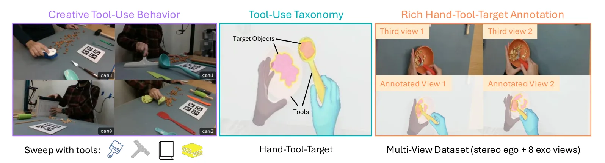
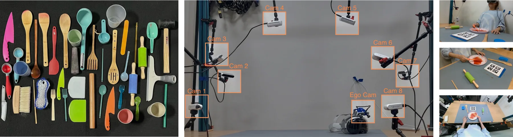
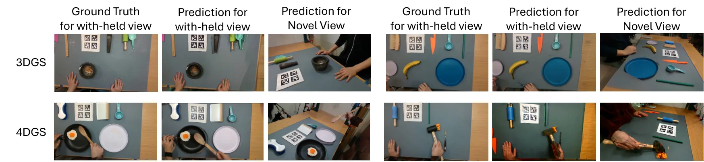
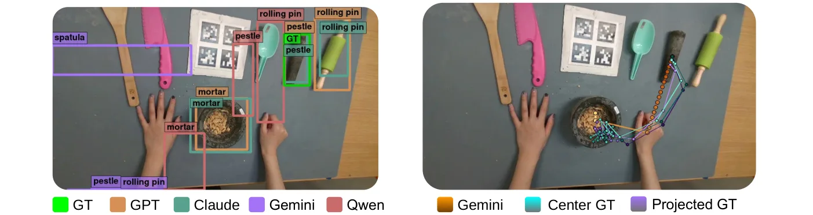
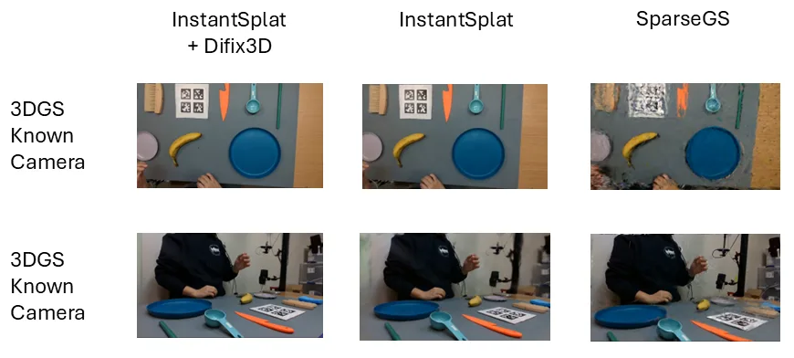
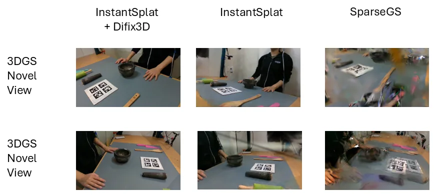

ToolDex：面向创造性工具使用的第一/第三人称人类演示数据集与三层基准
ToolDex: An Ego-Exo Human Demonstration Dataset for Creative Physical Tool Use
这是一篇数据集与基准论文，而不是新模型论文：贡献在于采集协议、标注链路（SAM2+DINOv2 目标掩码、FoundationPose 六自由度工具位姿、WiLoR 手部 MANO、HO-Cap 式手—工具联合优化）以及统一的三层评测。实验结论有三块：静态 3DGS 上 IS+Difix3D 达到 20.45 dB PSNR / 55.11 MUSIQ（InstantSplat 19.97 / 50.66）；4DGS 上叠加 GSFix3D 把 MUSIQ 拉到 69.92（+18.92），但 PSNR 从 19.60 掉到 15.97；策略学习上 Dex-X(RL) 平均成功率 55.1%，远高于运动学重定向的 14.0% 与行为克隆的 4.6%。对我们最有用的是“留出相机 cam6”的全参考评测协议，以及工具六自由度位姿的多视角融合加滑窗 BA 标注流程。
trials
static 3DGS PSNR
4DGS MUSIQ
policy success
作者、单位与技术谱系 · Research context
作者与单位
研究脉络
- TACO（Liu et al., CVPR 2024）方法基座关系：TACO 提供双手工具—动作—物体组合数据，但不建模被工具作用的靶物体；ToolDex 在相关工作与表 1 中明确把自己定位为补上“靶物体 + 可形变材料”这一层。[ToolDex 表 1 与相关工作]
- HO-Cap（Wang et al., NeurIPS 2025 D&B）技术前作关系：ToolDex 的手—工具联合位姿优化直接沿用 HO-Cap 的目标形式，只是把接触先验换成 MANO 网格与扫描工具网格之间的符号距离场项。[ToolDex 4.3 节]
- Creative robot tool use with LLMs（Xu et al., arXiv 2310.13065）团队前作关系：同一批 CMU/Stanford 作者先做“LLM 规划创造性工具使用”，本篇把问题推进到真实演示数据采集与策略学习，作者名单中 Mengdi Xu、Yaru Niu、Ding Zhao 重叠。[arXiv 2310.13065 作者列表]
合作网络
- Stanford × Carnegie Mellon 跨机构署名Stanford University → Carnegie Mellon University关系：共同署名[arXiv HTML 机构行]
- Mengdi Xu — Ding Zhao（共同署名）Mengdi Xu → Ding Zhao关系：共同署名[arXiv 2310.13065]
- ToolDex → Dex-X（作为评测基线）ToolDex → Dex-X（arXiv 2609.07747）关系：技术依赖[ToolDex A.5.3 节]
作者单位与角色来自论文首页机构行与脚注；“团队前作”一条基于作者名单重叠与主题连续性，属于有来源的解读，未推断导师或师生关系。
方法本质拆解 · What actually changed
不训练新主干，训练的是下游策略
论文没有提出新的重建或感知网络：3DGS/4DGS 用 InstantSplat、MASt3R、Difix3D、GSFix3D 这些现成组件拼装，VLM 全部零样本评测。真正被训练的只有策略基线，且沿用 ManipTrans 与 Dex-X 的官方流程在 IsaacGym/IsaacLab 里做强化学习，没有为本数据集设计专用策略结构。因此论文的增益来自数据与评测协议，而不是模型容量。
约束加在采集几何与接触先验上
硬约束首先是标定：8 台相机的内参和位姿由 AprilTag 初值加多视角 BA 固定，所有三维标注都在同一 rig 坐标系里表达。其次是物理约束：手—工具联合优化里加入 MANO 网格与工具网格的符号距离场接触项，既惩罚互穿又在操作阶段鼓励接触；工具位姿融合则用 FoundationPose 的逐视角置信度做加权，并叠加滑窗时间平滑。数据侧还刻意在桌面放 4–5 个干扰工具，迫使语言条件下的方法必须做视觉 grounding。
推理是现成管线两段式拼接
静态推理先由 MASt3R 给出跨视角稠密点初值，再跑 InstantSplat 的联合位姿—高斯优化 1k 迭代，最后单步扩散 Difix3D 修渲染；动态推理对每个时刻独立重复同一流程，再串 GSFix3D。整个流程没有全局 BA、没有测试时微调、也没有跨时刻的形变约束，这是它 4D 结果 PSNR 会掉 3.6 dB 的结构性原因。策略推理则完全离线：冻结程序执行，不在线调用大模型。
用标定采集把三层评测钉在同一坐标系
机制链条是：同步多视角采集给出共同的 rig 坐标系 → 逐视角位姿/分割/手部估计在该坐标系里融合成带时间平滑的轨迹 → 留出一台相机使全参考指标可信 → 同一批数据既能评 VLM 的语义与定位，也能评高斯重建和控制策略。它没有做的是跨时刻形变建模与在线优化，所以 4D 部分只是“逐帧重建再修图”，时间一致性靠数据本身而非算法保证。
输入 = 8 路标定 RGB-D 加双目第一人称演示；改变的位置 = 用统一 rig 坐标系组织手/工具/靶物体标注并留出一台相机做全参考；约束/动作 = 多视角融合 + 滑窗 BA + SDF 接触先验 + InstantSplat/Difix3D 两段式；直接效果 = 静态 20.45 dB、4D MUSIQ 69.92、策略成功率 55.1%，并暴露 PSNR 与感知指标的背离。

结论与问题Conclusion & Motivation
核心结论
ToolDex 的核心贡献是把“创造性工具使用”变成可测的三层任务，并用标定多相机采集把三层证据接到一起：语义层测 VLM 选工具与指位置，几何层测稀疏视角 3D/4D 重建，控制层测人类演示能否转成机器人策略。实验给出的分层结论很清楚：VLM 在工具选择上已达 80%，但空间定位差异极大（GPT-6-Astra 的 bbox IoU 0.891，Gemini-3.1-Pro 只有 0.010）；静态重建 IS+Difix3D 为 20.45 dB PSNR / 55.11 MUSIQ；策略学习上 Dex-X(RL) 平均 55.1%，运动学重定向仅 14.0%、行为克隆 4.6%。
动机与问题
论文指出，人类在缺少刀具时会用勺子、筷子甚至书本去切蛋糕，这类行为依赖接触、几何与任务约束的物理推理，而不是物体类别匹配。现有资源在这一层是断的：机器人工具使用基准多为仿真或简化交互，第一人称手物数据集（HOI4D、OakInk2、HOT3D、GigaHands）覆盖了手物交互却没有把“被工具作用的靶物体”单独建模，TACO 虽然给出工具—动作—物体组合，但不标注被切割的蛋糕或要搅拌的水。作者因此要回答的是：能否采到同时包含手、工具、靶物体及其可形变接触的真实数据，并让推理、重建、控制三层评测共用同一份采集。
方法Method
方法总览
数据侧：每个场景由 8 台 Intel RealSense 435 RGB-D（1280×720、30 Hz，软件同步）环绕工作台，演示者佩戴 Apple Vision Pro 加 Stereolabs ZED Mini 提供双目第一人称流；相机用 AprilTag 初值再做多视角 BA 标定，工具用 Shining3D 扫描成带纹理网格。标注侧：SAM2 配 DINOv2 种子做靶物体多视角分割，FoundationPose 逐视角估工具六自由度位姿后做置信加权融合与滑窗 BA，WiLoR 估 MANO 手部参数并用多视角点云恢复公制尺度，最后按 HO-Cap 做手—工具联合优化。评测侧：InstantSplat 为骨干的静态 3DGS、逐时刻独立训练的 4DGS、以及 VLM 推理与策略学习三套协议。
关键技术细节
评测协议的关键设计是留出相机：每个场景重建两次，一次用全部 8 台相机，一次丢掉 cam6 只用其余 7 台训练，再用 cam6 的真值图算 PSNR/SSIM/LPIPS，这样全参考指标不再依赖训练视角。静态管线分两段：MASt3R 跨视角稠密点先验初始化 InstantSplat 的联合位姿—高斯优化，训练 1k 迭代且刻意不加深度、畸变、法向正则；随后用单步扩散 Difix3D 修渲染图。4D 变体对每个时刻独立跑同一套 Stage 1，并在 Difix3D 后再串 GSFix3D。手—工具联合优化最小化四项：多视角二维手关键点重投影、手关键点到 RGB-D 深度距离、工具六自由度对多视角掩码的重投影、以及 MANO 网格与工具网格之间的符号距离场接触先验。

实验Experiments
实验设置
数据规模为 10,853 次试验、60 小时、6,158,809 帧带标注，覆盖 45 种工具、23 种支撑物、16 种可形变物体类型、16 种动作类型，平均每次试验 18.92 秒、567.58 帧，采集吞吐约每小时 60 次试验。重建评测在三类桌面工具场景（pestle_crush_nuts、ladle_scoop_nuts、knife_slice_banana）上取均值，动态部分另在 20 个场景、每场景最多 10 个采样时刻上做全 8 相机观测版本；指标为 PSNR/SSIM/LPIPS 与 MUSIQ/MANIQA/TOPIQ/BRISQUE/NIQE/PIQE，对照为 SplatFormer、Sparfels、SparseGS、InstantSplat。策略评测覆盖 6 个任务签名（stir/scoop/crush/collect），每任务 1000 回合随机初始状态，对照 Kinematic Retarget、BC(Retarget)、ManipTrans(RL)、Dex-X(RL)。
实验数字与比较
静态重建（表 6，三场景均值）：IS+Difix3D 为 20.45 PSNR / 0.779 SSIM / 0.364 LPIPS，InstantSplat 为 19.97 / 0.769 / 0.428，SplatFormer 仅 13.09 / 0.492 / 0.694；Sparfels 的 MUSIQ 最高（61.16），但 PSNR 只有 13.72，作者据此指出“好看不等于几何对”。动态重建（表 7）：InstantSplat-4D 19.60 PSNR / 51.00 MUSIQ，加 Difix3D 后 19.63 / 62.34，再串 GSFix3D 后 MUSIQ 升到 69.92 而 PSNR 降到 15.97；全 8 相机观测的 20 场景版本更极端，PSNR 从 36.97 掉到 21.11（表 8）。策略学习（表 5）：Dex-X(RL) 55.1%、ManipTrans 40.5%、Kinematic Retarget 14.0%、BC 4.6%；接触密集任务差距最大，捣碎坚果从 16.8% 提升到 46.7%，刮板收沙从 12.6% 提升到 57.5%。VLM 侧（表 3、表 4）：三家模型工具选择同为 80%，GPT-6-Astra 的 bbox IoU 0.891 对 Gemini-3.1-Pro 0.010；行为规划评估成功率 GPT-6-Astra 89.4%，而轨迹 Chamfer 距离最好是 Gemini Robotics ER 的 74.44 像素。
消融/失败边界
重建侧的“消融”是逐段替换：把 IS 换成 SplatFormer 掉 7.36 dB，说明 MASt3R 先验加联合位姿优化是主要增益；把 Difix3D 换成 GSFix3D 串联会牺牲 3.63 dB PSNR 与 0.08 SSIM，换来 MUSIQ +18.92，这条链路只适合感知指标优先的场景。策略侧没有做组件消融，但表 5 的工具维度暴露了边界：同一动作换工具就翻车，舀坚果用 ladle 时 Dex-X 66.8%，换 scooper 只有 31.3%，说明收益部分来自工具几何与示范轨迹的匹配，而非通用接触理解。另一个明确边界是 VLM 基准偏宽松：只要预测命中任一合理工具即算对，作者在 A.6 承认缺少人工校验的可接受工具集合。
局限与迁移Limitations & Transfer
局限与待核验
作者明确承认四条限制：只覆盖室内桌面，无法代表户外或移动场景的工具使用；刚性、颗粒、可形变三类材料虽都有，但材料与接触动力学覆盖仍不完整；遮挡与复杂接触会让标注带噪声；VLM 评测流程为容纳多种合理工具而偏宽松。我们没有在原文找到的部分需要标注为待核验：Table 1 的 58.3M 帧与正文 6,158,809 帧带标注并不矛盾，但“总帧数”是否已含 9 路相机未说明；留出 cam6 的 PSNR 只在 3 个静态场景与 3 个动态场景上算，样本量偏小；4DGS 是逐时刻独立训练，时间一致性没有定量指标；策略评测的成功判据是“跟完示范交互且不违反跟踪/稳定性约束”，与真实任务完成度仍有差距。
与你研究路线的关系
第一可迁移模块是采集与标定协议：8 路 RGB-D 的 AprilTag 初值加多视角 BA、以及“丢一台相机做全参考”的评测设计，可以直接搬到我们多相机车载或室内采集上，用来区分“重建好看”与“几何可用”。第二是工具六自由度位姿标注链路：FoundationPose 逐视角估计、按置信度融合、再滑窗 BA 加时间平滑，这套组合对我们做目标级地图维护、外参在线校核同样成立。第三是可直接复现的实验：在我们现有序列上跑 InstantSplat 与 instant-ngp 式基线，比较 PSNR/SSIM 与 LPIPS 的排序是否一致，并人为遮挡一台相机，观察各方法在留出视角下的退化曲线；同时记录 4D 场景里 PSNR 与 MUSIQ 的背离幅度，作为以后选几何代理指标的警戒线。







